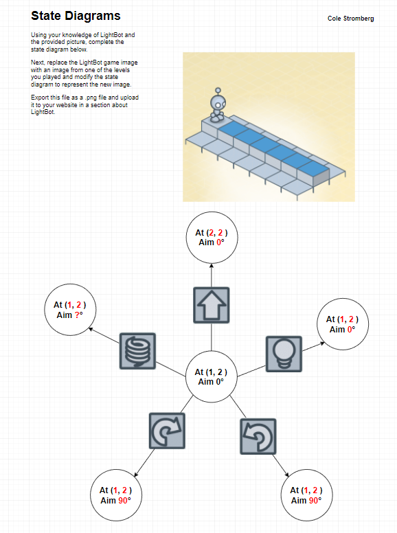

Home
Portfolio
About Me
Rules
This is my Portfolio Page!

Lightbot is like a computer because they both mainly operate through inputs and outputs. For a computer, an input like pressing a key on the keyboard will result with an output where the corresponding key on screen.
For lightbot, an input of one 90 degree turn will cause an output of lighhtbot turning in one corresponding direction.Lightbot is also similar to a computer due to it operating in a systematic and consistent method, working purely off of
a changing state. Lightbot is differant from a computer because of how limited its actions are. Lightbot can only preform 5 actions in a maximum of two loops. A real computer can do much more.

Blown to Bits Response
I agree that computing will transform society. Relative to the past decades before the digital age, Life was very differant from what it is today. Almost every industry has been redesigned. With
the rate at which computing has advanced in past years, one can only speculate how integrated society and computing will be in years to come. Information sharing will likely reach a record high, and will reform the education system
around the internet, furthering what is already happening in school. Online privacy will likely decrease every year due to the expanding nature of the internet, and the sheer amount of information that will be stored and eventually
indexed.
Scratch Game
Branching Conclusion Questions
1. Writing code in smaller pieces is benefical for troubleshooting, because if you submit a few lines of code at a time, it is much easier to find errors than if you're searching through the entire code at once for many errors.
2. Essay writing is similar to programming because both require repeated attempts at improving and clarifying your work before it serves its intended purposes. Programmers have to solve errors and simplify code. Essay writers
have to fix spelling, gramtical, and structural errors before their writing conveys their message.
4. A dual core processor can seem to run 10 programs at once by running multiple programs simultaneously. The CPU's do not run more than one line of a single program at the same time, but can run one line from multiple programs
almost instantaneously
Scratch Music Game
1.1.4 Conclusion Questions
1. Having very particularly namrf messages working with only one sprite at a time will cause less code and will make things clearer and easier to understand at a glance.
2. I believe events are the actions caused by the result of triggers like events, and handlers are the things, like sprites, that commit the action.
3. a) Some details of the play function are which sound is played on which instrament, and for how long.
b) It would be useful to show how long a beat correlates to real time, for those musically untrained. It would also be useful to know how instraments are added, to allow for a larger variation of noises.
Scratch Soccer Game
1.1.5 Conclusion
1. Using a fixed value for a variable makes the variables on a single line very simple to understand and change on a line by line basis.
2.
If x = 1
play sound 1
If x = 2
play sound 2
if key (space) held down
set x = 1
else
set x = 2
3. a) A fitbit and the lap count on a stop watch are examples of accumulators.
b)The accumulator raises its count every time the user takes a step, which classifies it as an accumulator.
4. The accumulator role raises a single value every time an action is completed. An aggregator role compiles a list of values, without combining them.
One Way Flag Variable
1.1.6 Conclusion Questions
1. A stepper is a list of consecutive whole numbers. A walker is the message or value assigened to each level of the stepper. Best so far is the largest or smallest value of a certain variable that is stored, similar to a high score.
2.A pac man machine at an arcade recoredes a high score, which is an example of a best-so-far variable.